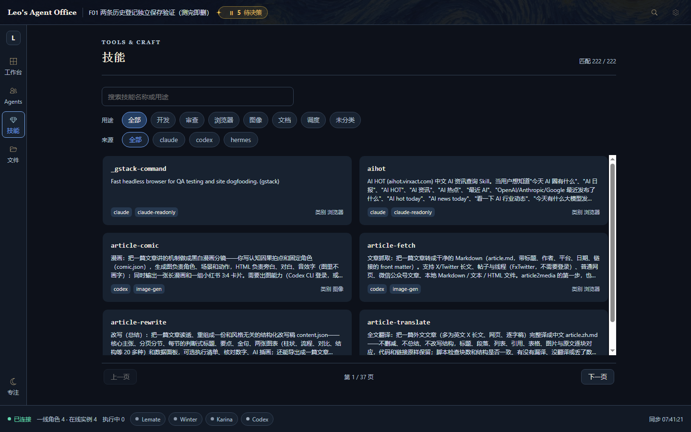
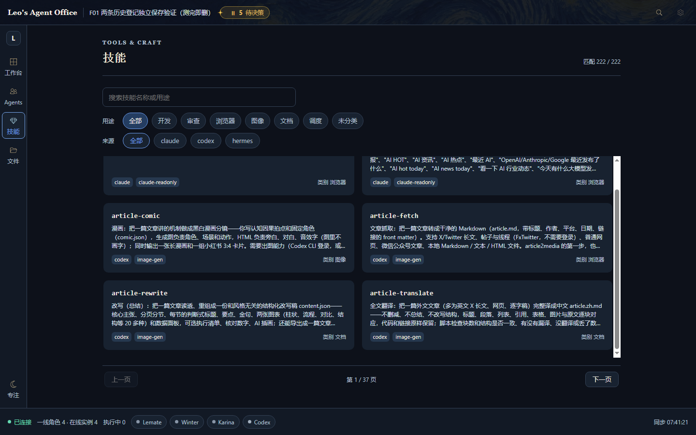

#skill-list{padding-bottom:0} + 描述改多行后卡片整体变高。#skill-list {
min-height: 0; overflow-y: auto; padding-bottom: 16px;
}
#skill-pagination {
height: 48px; min-height: 48px;
margin: 16px 0 0; padding: 0 4px; align-items: center;
}
.skill-row {
height: auto; min-height: 144px; /* 原 r12 固定 height:144px → 标签换行可撑开 */
}
.skill-row small {
font-size: 12px; line-height: 18px; /* 原 13/20 clamp2 固定 40px 盒 */
height: auto; flex: none;
display: -webkit-box; -webkit-line-clamp: 3; -webkit-box-orient: vertical;
overflow: hidden; white-space: normal;
}
| 指标 | 规格 | baseline 实测 | after 实测 |
|---|---|---|---|
| #skill-list overflow-y / min-height / padding-bottom | auto / 0 / 16px | auto / 0px / 0px | auto / 0px / 16px |
| #skill-pagination 高度（计算值） | 48px | 56px | 48px（min-height 48px） |
| 分页与网格底间隔 | 16px | 24px | 16px |
| .skill-row 高度 | min-height 144px | 144px（固定 height） | 144px（height:auto + min-height） |
| 描述 字号/行高/clamp | 12px / 18px / 3 | 13px / 20px / 2（固定 40px 盒） | 12px / 18px / 3，长文本盒高 54px = 3×18，clamped=true；短描述 1 行不截断 |
| 布局 | 双列，gap 16×16 | 2 列 | 2 列，gap 16×16，20 卡高度集合 [144] |
| 检查项 | 规格 | baseline | after |
|---|---|---|---|
| 网格可视区域 | 约 416px | clientH 411 | clientH 427（卡片可视区 411 = 427−16） |
| 容器可滚动 | scrollH > clientH 可滚 | 1586 > 411 | 1602 > 427，实达 maxScroll 1175 |
| 顶部态第 6 卡 | 不被裁 | 底边超折叠线 55px，标签整段在下 | 可见底 ↔ 分页顶 = 16px（余 39px 可滚出） |
| 滚到底：末卡 ↔ 列表底 | ≥16px | 0px 贴边 | 16px |
| 滚到底：末卡 ↔ 分页顶 | ≥16px | 24px | 32px（第 6 卡底 ↔ 分页顶 1152px） |
| 可见卡标签 .sk-meta | 完整在框内 | — | allMetaInside = true（6 张逐一核验） |
| 分页覆盖可见卡 | 无 | 无 | 可见区段重叠 = false（顶/底两态） |
| 横向滚动 | 无 | 无 | 无 |
| 视口 | clientH / scrollH | 分页高 / 间隔 | 顶部态第 6 卡 | 滚到底 末卡↔列表底 / ↔分页顶 | 标签在框内 / 重叠 / 横滚 |
|---|---|---|---|---|---|
| 1280×768 | 295 / 1602（maxScroll 1307 实达） | 48px / 16px | 可见底 ↔ 分页顶 16px（171px 可滚出） | 16px / 32px | true / false / 无 |
| 1920×1080 | 607 / 1602 | 48px / 16px | 整卡可见（底边在折叠线上方 141px） | 16px / 32px | true / false / 无 |
滚到底态截图（after，三视口）与回顶态截图共 6 张：verify-s01r13-{1440x900,1280x768,1920x1080}-{bottom,top}.png。1440×900 底部态经视觉模型复核：最底排卡片完整（pill 标签行、类别文字、卡片下边缘全部可见）；分页条位于滚动区之外、有分割线分隔、不遮挡任何卡片、观感 ~48px。


416px 为任务书估算值。实测修复后容器 clientHeight = 427px，扣容器 padding-bottom 16px 后卡片实际可视区 411px，两口径与 416px 偏差 ≤11px（≤2.6%）。硬性数值（分页 48px、间隔 16px、padding-bottom 16px、min-height 0）全部精确命中；若必须钉死 416px 需压页头/筛选区高度，超出本轮“只改这一处”授权，未动。
cp web/app.css.bak-s01r13 web/app.css。